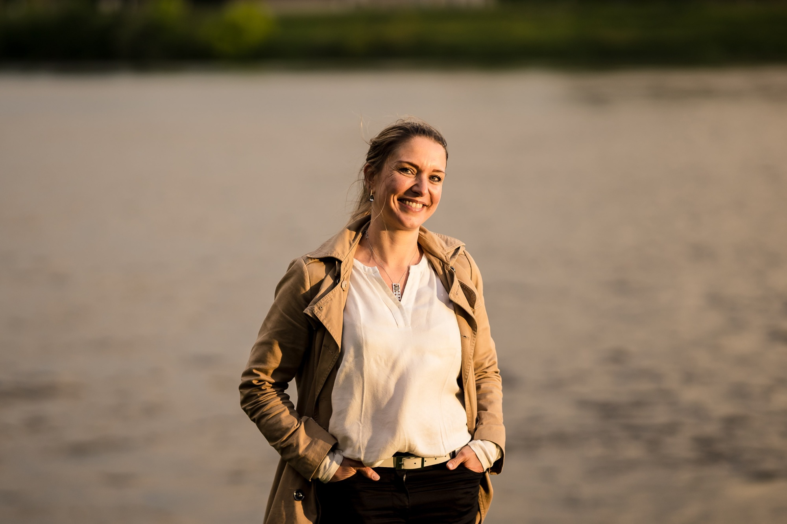

UK · Europe · Middle East — Cross‑Border Delivery
Royaume‑Uni · Europe · Moyen‑Orient — Expertise transfrontalière
A boutique consultancy helping energy organisations transform — through sustainable performance, inclusive leadership, and operational excellence across complex, safety‑critical environments.
Un cabinet de conseil dédié à la transformation des organisations de l'énergie — en mobilisant performance durable, leadership inclusif et excellence opérationnelle au cœur d'environnements complexes et à haute exigence de sûreté.
Our PurposeNotre raison d'être
The energy sector is at a defining moment. The transition to cleaner, more sustainable energy demands not just new technologies — it demands better organisations, stronger leaders, and more inclusive ways of working.
Dans un secteur sous pression — transformation industrielle, exigences de sûreté, attentes sociétales et compétition internationale — la réussite se joue autant dans la stratégie que dans l'exécution. La transition ne se décrète pas : elle se construit par des organisations capables de se développer au‑delà de leurs frontières, d'opérer avec simplicité et clarté, et de mobiliser les équipes autour d'un cap commun.
We believe lasting change happens when people are empowered — when leaders trust their teams, organisations remove unnecessary complexity, and companies grow across borders with intention and integrity.
Nous croyons à une transformation exigeante et pragmatique : une ambition commerciale assumée, une performance opérationnelle mesurée, et un leadership inclusif qui responsabilise — pour faire émerger une exécution plus rapide, plus fiable et plus durable.
"Accelerating the transformation of energy sector organisations by combining sustainable performance, inclusive leadership, and operational excellence." « Transformer les organisations du secteur de l'énergie en alignant ambition commerciale, performance opérationnelle et leadership inclusif. »

The FounderLa fondatrice
French senior leader with over twenty years of experience in the nuclear and energy sector, Alexandra supports organisations navigating complex, high‑stakes environments by combining strategic clarity, operational discipline, and on‑the‑ground execution. Her career includes contributions to major international programmes such as Hinkley Point C and the New Safe Confinement (Tchernobyl) — strengthening her ability to deliver in contexts where performance, safety and cooperation must advance together.
Dirigeante française, Alexandra accompagne les organisations de l'énergie dans des environnements complexes et à forte exigence, en combinant clarté stratégique, rigueur opérationnelle et exécution de terrain. Forte de plus de vingt ans d'expérience dans le nucléaire et l'énergie, elle a contribué à des programmes internationaux majeurs tels que Hinkley Point C et le New Safe Confinement (Tchernobyl).
An Oxford Executive MBA candidate and Franco‑British Young Leader 2025, she brings a rare capacity to connect operational, commercial, regulatory, and human dimensions of transformation. Her work is grounded in cross‑cultural intelligence, deep transformation expertise, and a longstanding commitment to Diversity & Inclusion, championing people‑centred performance across Europe and the Middle East.
Oxford Executive MBA candidate et Franco‑British Young Leader 2025, elle apporte une capacité unique à relier les enjeux opérationnels, commerciaux, réglementaires et humains, en particulier dans des contextes transfrontaliers où performance, sûreté et coopération doivent avancer de concert.
Her approach focuses on creating the conditions for sustainable performance — built on trust, autonomy, and collective responsibility. Alexandra advises leaders seeking to expand internationally, optimise operational effectiveness, or build high‑performing, high‑trust teams capable of delivering over the long term.
Son approche vise à créer les conditions d'une performance durable, fondée sur la confiance, l'autonomie et la responsabilité collective. Elle accompagne les dirigeants qui souhaitent se développer à l'international, optimiser leurs opérations ou bâtir des équipes capables de délivrer à haut niveau dans la durée.
LinkedInWhat We DoNotre expertise
Business Development · Markets · PipelinesDéveloppement Commercial · Marchés · Pipelines
We help energy organisations expand with confidence — accelerating commercial growth, navigating complex international environments, and connecting opportunities across Europe and the Middle East with the precision of a sector insider. Our approach blends rigorous market intelligence with hands‑on business development leadership to build pipelines that sustain long‑term growth.
Nous aidons les organisations de l'énergie à se développer avec confiance — en accélérant leur croissance commerciale, en naviguant des environnements internationaux complexes et en connectant les opportunités à travers l'Europe et le Moyen‑Orient avec la précision d'un expert sectoriel. Notre approche combine intelligence de marché et leadership BD opérationnel pour construire des pipelines capables de soutenir une croissance durable.
Business Optimisation · Lean · SimplificationOptimisation · Lean · Simplification
We identify the structural and behavioural barriers that constrain performance — redesigning collaboration, simplifying workflows, and aligning teams around clear, efficient ways of working. The result: faster execution, stronger cooperation, and measurable, sustainable improvements visible on the ground.
Nous identifions les freins structurels et comportementaux qui limitent la performance — en repensant la collaboration, en simplifiant les workflows et en alignant les équipes autour de modes de fonctionnement clairs et efficaces. Résultat : une exécution plus rapide, une coopération renforcée et des améliorations mesurables, durables, visibles sur le terrain.
Leadership Transformation · TeamRise™ MethodTransformation du Leadership · Méthode TeamRise™
Built on the TeamRise™ method — combining inclusive leadership, psychological safety, and collective intelligence — we help leaders and teams reach higher levels of autonomy, trust, and performance. Through transformation journeys, high‑impact seminars, and targeted support, we embed the behaviours and culture that enable teams to progress sustainably — and deliver consistently.
Fondée sur la méthode TeamRise™ — une approche qui combine leadership inclusif, sécurité psychologique et intelligence collective — nous aidons leaders et équipes à atteindre des niveaux supérieurs d'autonomie, de confiance et de performance. À travers des parcours de transformation, des séminaires à fort impact et un accompagnement ciblé, nous ancrons les comportements et la culture qui permettent aux équipes de progresser durablement — et de délivrer avec constance.
Why Nova BMPourquoi Nova BM
Nova BM partners with energy organisations to accelerate growth, unlock operational performance, and strengthen leadership capability — combining sector‑insider rigour with a people‑centred approach that makes change durable.
Nova BM accompagne les organisations de l'énergie pour accélérer leur croissance, renforcer leur performance opérationnelle, et développer leur capacité de leadership — en combinant la rigueur d'un expert sectoriel avec une approche centrée sur l'humain qui ancre le changement dans la durée.
Founded by Alexandra Bugnon‑Murys — Oxford Executive MBA candidate, Franco‑British Young Leader 2025, and senior leader with 20+ years in nuclear and energy — Nova BM brings a rare blend of cross‑cultural insight, technical authority, and a deep commitment to inclusive, people‑centred performance.
Fondée par Alexandra Bugnon‑Murys — Oxford Executive MBA candidate, Franco‑British Young Leader 2025, et plus de 20 ans d'expérience dans le nucléaire et l'énergie — Nova BM réunit une combinaison rare d'intelligence interculturelle, d'autorité technique, et d'un engagement profond pour une performance inclusive et responsable.
Where We WorkOù nous intervenons
We work where energy systems are evolving — connecting markets, bridging cultures, and enabling organisations to build strong, resilient partnerships across borders. Our role is to help clients navigate complexity, enter new territories with confidence, and operate effectively in multinational environments.
Nous intervenons là où les systèmes énergétiques évoluent — connecter les marchés, relier les cultures, bâtir des partenariats durables. À travers des environnements complexes et multiculturels, nous aidons les organisations à avancer avec clarté, à entrer sur de nouveaux territoires avec confiance et à coopérer efficacement à l'international.
Our Vision · 2028Notre vision · 2028
By 2028, Nova BM will be a trusted partner for energy organisations operating across the UK, Europe, and the Middle East — supporting leaders and companies as they transform, scale across borders, and navigate the operational and cultural complexities of a rapidly evolving sector.
D'ici 2028, Nova BM sera un partenaire de confiance pour les organisations de l'énergie opérant au Royaume‑Uni, en Europe et au Moyen‑Orient — en accompagnant dirigeants et organisations à se transformer, à se développer au‑delà des frontières, et à maîtriser les complexités opérationnelles et culturelles d'un secteur en évolution rapide.
Our ambition is to set the benchmark for people‑centred performance in demanding, safety‑critical environments: where operational excellence, cross‑border collaboration, and inclusive leadership directly shape strategic outcomes.
Notre ambition : établir un nouveau standard de performance, dans des environnements exigeants et à forte exigence de sûreté — où l'excellence opérationnelle, la coopération transfrontalière et le leadership inclusif façonnent directement les résultats stratégiques.
We are not simply building a consultancy. We are building a connected community of leaders, organisations, and partners committed to a cleaner, more resilient, and better‑led energy future — where performance is achieved not just through systems and processes, but through people.
Nous ne construisons pas simplement un cabinet de conseil. Nous construisons une communauté connectée de leaders, d'organisations et de partenaires engagés pour un avenir énergétique plus propre, plus résilient et mieux piloté — où la performance se gagne autant par les systèmes et les processus que par les personnes.
A focused conversation to clarify priorities, surface key challenges, and explore how Nova BM can support the next step with clarity, rigour, and a people‑centred approach.
Une conversation ciblée pour clarifier les priorités, qualifier les enjeux à venir et explorer comment Nova BM peut soutenir la prochaine étape — avec clarté, rigueur et une approche centrée sur l'humain.
15‑minute call · confidential · no obligation Appel de 15 minutes · confidentiel · sans engagementcontact@nova-bm.com · +44 (0)7 405 738 435 · +33 (0)6 77 66 40 17